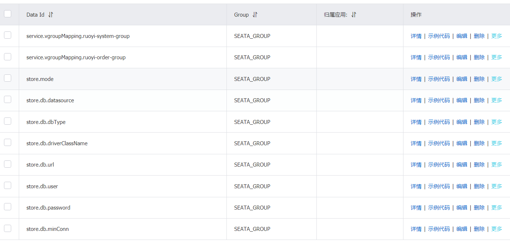

Seata集合nacos使用
基于windows版,以下的配置中心在另外一个服务器，seata在windows服务器
下载：https://github.com/seata/seata/releases
配置：
新建config.txt文件
service.vgroupMapping.ruoyi-system-group=default
service.vgroupMapping.ruoyi-order-group=default
store.mode=db
store.db.datasource=druid
store.db.dbType=mysql
store.db.driverClassName=com.mysql.jdbc.Driver
store.db.url=jdbc:mysql://127.0.0.1:3306/ry-seata?useUnicode=true
store.db.user=root
store.db.password=123
store.db.minConn=5
store.db.maxConn=30
store.db.globalTable=global_table
store.db.branchTable=branch_table
store.db.queryLimit=100
store.db.lockTable=lock_table
store.db.maxWait=5000
放在与seata的conf文件夹同一级目录
service.vgroupMapping怎么写？开启seata配置
ruoyi-system-group对应配置文件中的tx-service-group参数
# spring配置
spring:
redis:
host: 192.168.84.105
port: 6379
password: 123456
datasource:
druid:
stat-view-servlet:
enabled: true
loginUsername: admin
loginPassword: 123456
dynamic:
primary: master #设置默认的数据源或者数据源组,默认值即为master
strict: false #严格匹配数据源,默认false. true未匹配到指定数据源时抛异常,false使用默认数据源
druid:
initial-size: 5
min-idle: 5
maxActive: 20
maxWait: 60000
timeBetweenEvictionRunsMillis: 60000
minEvictableIdleTimeMillis: 300000
validationQuery: SELECT 1 FROM DUAL
testWhileIdle: true
testOnBorrow: false
testOnReturn: false
poolPreparedStatements: true
maxPoolPreparedStatementPerConnectionSize: 20
filters: stat,slf4j
connectionProperties: druid.stat.mergeSql\=true;druid.stat.slowSqlMillis\=5000
datasource:
# 主库数据源
master:
driver-class-name: com.mysql.cj.jdbc.Driver
url: jdbc:mysql://192.168.84.105:3306/ry-order?useUnicode=true&characterEncoding=utf8&zeroDateTimeBehavior=convertToNull&useSSL=true&serverTimezone=GMT%2B8
username: root
password: lastnine
# 从库数据源
# slave:
# username:
# password:
# url:
# driver-class-name:
seata: true # 开启seata代理，开启后默认每个数据源都代理，如果某个不需要代理可单独关闭
# seata配置
seata:
# 默认关闭，如需启用spring.datasource.dynami.seata需要同时开启
enabled: true
# Seata 应用编号，默认为 ${spring.application.name}
application-id: ${spring.application.name}
# Seata 事务组编号，用于 TC 集群名
tx-service-group: ${spring.application.name}-group
# 关闭自动代理
enable-auto-data-source-proxy: false
# 服务配置项
service:
# 虚拟组和分组的映射
vgroup-mapping:
ruoyi-system-group: default
config:
type: nacos
nacos:
serverAddr: 192.168.84.105:8848
group: SEATA_GROUP
namespace:
registry:
type: nacos
nacos:
application: seata-server
server-addr: 192.168.84.105:8848
namespace:
# mybatis配置
mybatis:
# 搜索指定包别名
typeAliasesPackage: com.ruoyi.order
# 配置mapper的扫描，找到所有的mapper.xml映射文件
mapperLocations: classpath:mapper/**/*.xml
新建ry-seata数据库
DROP DATABASE IF EXISTS `ry-seata`;
CREATE DATABASE `ry-seata` DEFAULT CHARACTER SET utf8mb4 COLLATE utf8mb4_general_ci;
SET NAMES utf8mb4;
SET FOREIGN_KEY_CHECKS = 0;
USE `ry-seata`;
-- -------------------------------- The script used when storeMode is 'db' --------------------------------
-- the table to store GlobalSession data
CREATE TABLE IF NOT EXISTS `global_table`
(
`xid` VARCHAR(128) NOT NULL,
`transaction_id` BIGINT,
`status` TINYINT NOT NULL,
`application_id` VARCHAR(32),
`transaction_service_group` VARCHAR(32),
`transaction_name` VARCHAR(128),
`timeout` INT,
`begin_time` BIGINT,
`application_data` VARCHAR(2000),
`gmt_create` DATETIME,
`gmt_modified` DATETIME,
PRIMARY KEY (`xid`),
KEY `idx_gmt_modified_status` (`gmt_modified`, `status`),
KEY `idx_transaction_id` (`transaction_id`)
) ENGINE = InnoDB
DEFAULT CHARSET = utf8mb4;
-- the table to store BranchSession data
CREATE TABLE IF NOT EXISTS `branch_table`
(
`branch_id` BIGINT NOT NULL,
`xid` VARCHAR(128) NOT NULL,
`transaction_id` BIGINT,
`resource_group_id` VARCHAR(32),
`resource_id` VARCHAR(256),
`branch_type` VARCHAR(8),
`status` TINYINT,
`client_id` VARCHAR(64),
`application_data` VARCHAR(2000),
`gmt_create` DATETIME(6),
`gmt_modified` DATETIME(6),
PRIMARY KEY (`branch_id`),
KEY `idx_xid` (`xid`)
) ENGINE = InnoDB
DEFAULT CHARSET = utf8mb4;
-- the table to store lock data
CREATE TABLE IF NOT EXISTS `lock_table`
(
`row_key` VARCHAR(128) NOT NULL,
`xid` VARCHAR(96),
`transaction_id` BIGINT,
`branch_id` BIGINT NOT NULL,
`resource_id` VARCHAR(256),
`table_name` VARCHAR(32),
`pk` VARCHAR(36),
`gmt_create` DATETIME,
`gmt_modified` DATETIME,
PRIMARY KEY (`row_key`),
KEY `idx_branch_id` (`branch_id`)
) ENGINE = InnoDB
DEFAULT CHARSET = utf8mb4;
-- for AT mode you must to init this sql for you business database. the seata server not need it.
CREATE TABLE IF NOT EXISTS `undo_log`
(
`branch_id` BIGINT(20) NOT NULL COMMENT 'branch transaction id',
`xid` VARCHAR(100) NOT NULL COMMENT 'global transaction id',
`context` VARCHAR(128) NOT NULL COMMENT 'undo_log context,such as serialization',
`rollback_info` LONGBLOB NOT NULL COMMENT 'rollback info',
`log_status` INT(11) NOT NULL COMMENT '0:normal status,1:defense status',
`log_created` DATETIME(6) NOT NULL COMMENT 'create datetime',
`log_modified` DATETIME(6) NOT NULL COMMENT 'modify datetime',
UNIQUE KEY `ux_undo_log` (`xid`, `branch_id`)
) ENGINE = InnoDB
AUTO_INCREMENT = 1
DEFAULT CHARSET = utf8mb4 COMMENT ='AT transaction mode undo table';
新建nacos-config.sh文件
放在seata的conf文件夹中
内容如下,需配置nacos地址
#!/usr/bin/env bash
# Copyright 1999-2019 Seata.io Group.
#
# Licensed under the Apache License, Version 2.0 (the "License");
# you may not use this file except in compliance with the License.
# You may obtain a copy of the License at、
#
# http://www.apache.org/licenses/LICENSE-2.0
#
# Unless required by applicable law or agreed to in writing, software
# distributed under the License is distributed on an "AS IS" BASIS,
# WITHOUT WARRANTIES OR CONDITIONS OF ANY KIND, either express or implied.
# See the License for the specific language governing permissions and
# limitations under the License.
while getopts ":h:p:g:t:u:w:" opt
do
case $opt in
h)
host=$OPTARG
;;
p)
port=$OPTARG
;;
g)
group=$OPTARG
;;
t)
tenant=$OPTARG
;;
u)
username=$OPTARG
;;
w)
password=$OPTARG
;;
?)
echo " USAGE OPTION: $0 [-h host] [-p port] [-g group] [-t tenant] [-u username] [-w password] "
exit 1
;;
esac
done
urlencode() {
for ((i=0; i < ${#1}; i++))
do
char="${1:$i:1}"
case $char in
[a-zA-Z0-9.~_-]) printf $char ;;
*) printf '%%%02X' "'$char" ;;
esac
done
}
if [[ -z ${host} ]]; then
# host=nacos地址
host=192.168.84.105
fi
if [[ -z ${port} ]]; then
port=8848
fi
if [[ -z ${group} ]]; then
group="SEATA_GROUP"
fi
if [[ -z ${tenant} ]]; then
tenant=""
fi
if [[ -z ${username} ]]; then
username=""
fi
if [[ -z ${password} ]]; then
password=""
fi
nacosAddr=$host:$port
contentType="content-type:application/json;charset=UTF-8"
echo "set nacosAddr=$nacosAddr"
echo "set group=$group"
failCount=0
tempLog=$(mktemp -u)
function addConfig() {
curl -X POST -H "${contentType}" "http://$nacosAddr/nacos/v1/cs/configs?dataId=$(urlencode $1)&group=$group&content=$(urlencode $2)&tenant=$tenant&username=$username&password=$password" >"${tempLog}" 2>/dev/null
if [[ -z $(cat "${tempLog}") ]]; then
echo " Please check the cluster status. "
exit 1
fi
if [[ $(cat "${tempLog}") =~ "true" ]]; then
echo "Set $1=$2 successfully "
else
echo "Set $1=$2 failure "
(( failCount++ ))
fi
}
count=0
for line in $(cat $(dirname "$PWD")/config.txt | sed s/[[:space:]]//g); do
(( count++ ))
key=${line%%=*}
value=${line#*=}
addConfig "${key}" "${value}"
done
echo "========================================================================="
echo " Complete initialization parameters, total-count:$count , failure-count:$failCount "
echo "========================================================================="
if [[ ${failCount} -eq 0 ]]; then
echo " Init nacos config finished, please start seata-server. "
else
echo " init nacos config fail. "
fi
运行 nacos-config.sh 192.168.84.105,运行完后会将config.txt中的配置信息发送到nacos配置中心里

修改seata/conf/registry.conf文件
将registry模块和config模块中的配置改为nacos
registry {
# file 、nacos 、eureka、redis、zk、consul、etcd3、sofa
type = "nacos"
nacos {
application = "seata-server"
serverAddr = "192.168.84.105:8848"
group = "SEATA_GROUP"
namespace = ""
cluster = "default"
username = "nacos"
password = "nacos"
}
eureka {
serviceUrl = "http://localhost:8761/eureka"
application = "default"
weight = "1"
}
redis {
serverAddr = "localhost:6379"
db = 0
password = ""
cluster = "default"
timeout = 0
}
zk {
cluster = "default"
serverAddr = "127.0.0.1:2181"
sessionTimeout = 6000
connectTimeout = 2000
username = ""
password = ""
}
consul {
cluster = "default"
serverAddr = "127.0.0.1:8500"
aclToken = ""
}
etcd3 {
cluster = "default"
serverAddr = "http://localhost:2379"
}
sofa {
serverAddr = "127.0.0.1:9603"
application = "default"
region = "DEFAULT_ZONE"
datacenter = "DefaultDataCenter"
cluster = "default"
group = "SEATA_GROUP"
addressWaitTime = "3000"
}
file {
name = "file.conf"
}
}
config {
# file、nacos 、apollo、zk、consul、etcd3
type = "nacos"
nacos {
serverAddr = "192.168.84.105:8848"
namespace = ""
group = "SEATA_GROUP"
username = "nacos"
password = "nacos"
}
consul {
serverAddr = "127.0.0.1:8500"
aclToken = ""
}
apollo {
appId = "seata-server"
## apolloConfigService will cover apolloMeta
apolloMeta = "http://192.168.1.204:8801"
apolloConfigService = "http://192.168.1.204:8080"
namespace = "application"
apolloAccesskeySecret = ""
cluster = "seata"
}
zk {
serverAddr = "127.0.0.1:2181"
sessionTimeout = 6000
connectTimeout = 2000
username = ""
password = ""
nodePath = "/seata/seata.properties"
}
etcd3 {
serverAddr = "http://localhost:2379"
}
file {
name = "file.conf"
}
}
运行seata/bin下的seata-server.sh文件
示例
运行两个服务user和order，两个服务使用的不同的数据库，相关的依赖待续。。。。
RemoteSysUserService为在order服务中使用feign远程调用user服务
@GlobalTransactional第一个开启事务的方法必须添加seata的全局事务注解
@Service
public class MyService {
@Autowired
private ITOrderService itOrderService;
@Autowired
private RemoteSysUserService remoteSysUserService;
@Transactional
@GlobalTransactional
public void add(){
final TOrder tOrder =
new TOrder();
tOrder.setName("order");
tOrder.setUid(123L);
itOrderService.insertTOrder(tOrder);
final SysUser sysUser =
new SysUser();
sysUser.setUserName("taoqqqq");
sysUser.setNickName("taoqqqqnn");
remoteSysUserService.addUser(sysUser);
int i = 1 / 0 ;
}
}
遇到的问题
Type id handling not implemented for type java.lang.Object (by serializer of type...
解决方案：将数据库字段为datatime类型的改为timestamp
'xxx'.undo_log doesn't exits，某某数据库中undo_log表不存在
解决方案：需要在设计分布式事务的每个数据库中添加一张undo_log表
CREATE TABLE `ry-order`.undo_log
(
id BIGINT(20) NOT NULL AUTO_INCREMENT,
branch_id BIGINT(20) NOT NULL,
xid VARCHAR(100) NOT NULL,
context VARCHAR(128) NOT NULL,
rollback_info LONGBLOB NOT NULL,
log_status INT(11) NOT NULL,
log_created DATETIME NOT NULL,
log_modified DATETIME NOT NULL,
PRIMARY KEY (id),
UNIQUE KEY ux_undo_log (xid, branch_id)
) ENGINE = InnoDB
AUTO_INCREMENT = 1
DEFAULT CHARSET = utf8mb4;